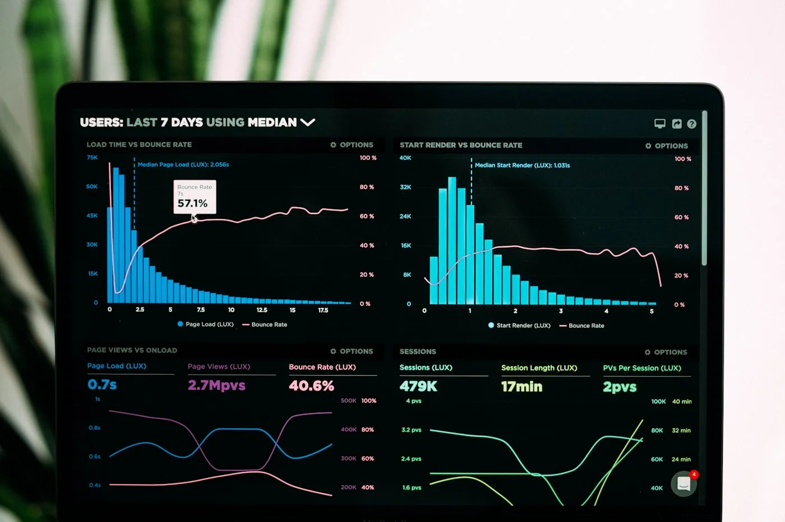
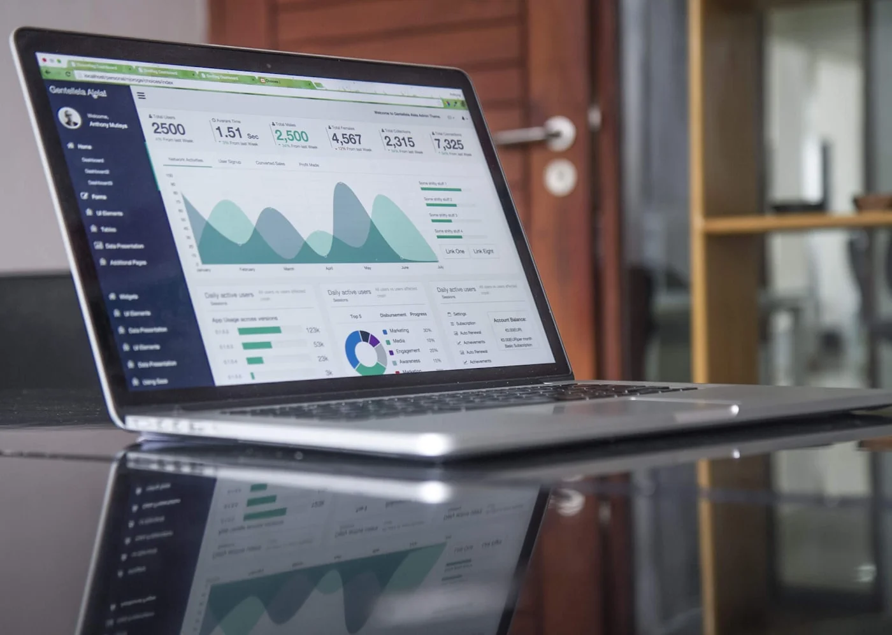

Welche Unternehmensprozesse lassen sich mit KI automatisieren?

Warum Prozessautomatisierung mit KI jetzt wichtig ist
Der Arbeitsmarkt ist angespannt. Fachkräfte fehlen. Gleichzeitig steigt der Druck, effizienter zu arbeiten. Viele Unternehmen haben erkannt: Wachstum ist nicht mehr nur eine Frage von mehr Personal, sondern von intelligenteren Systemen.
KI-gestützte Automatisierung bedeutet nicht, dass Roboter Menschen ersetzen. Es bedeutet, dass repetitive, zeitraubende Aufgaben automatisch erledigt werden – sodass Menschen sich auf die wichtigen Dinge konzentrieren können.
1. Dokumentenanalyse und Dateneingabe
Das Problem: Rechnungen, Verträge, E-Mails – täglich landen hunderte Dokumente auf Schreibtischen. Informationen müssen manuell extrahiert und in Systeme eingegeben werden. Das kostet Zeit und führt zu Fehlern.
Die Lösung: KI-Systeme können Texte lesen, verstehen und relevante Informationen automatisch extrahieren. Zum Beispiel:
- Rechnungsverarbeitung: Die KI erkennt Rechnungsnummer, Betrag, Fälligkeitsdatum und trägt alles automatisch ins Buchhaltungssystem ein.
- Vertragsanalyse: Wichtige Klauseln werden automatisch markiert, Risiken erkannt.
- E-Mail-Kategorisierung: Kundenanfragen werden automatisch sortiert und an die richtige Abteilung weitergeleitet.
ROI: Unternehmen sparen bis zu 70% der Zeit, die sie bisher für Dateneingabe aufwenden. Bei einem mittelgroßen Unternehmen entspricht das mehreren Vollzeitstellen.
2. Kundenbetreuung und Support
Das Problem: Kunden haben Fragen. Rund um die Uhr. Support-Teams sind überlastet, Antwortzeiten steigen, Kunden sind unzufrieden.
Die Lösung: KI-gestützte Chatbots und Assistenzsysteme können Standard-Anfragen sofort beantworten. Aber es geht weiter:
- Intelligente Wissensdatenbank: Das System durchsucht automatisch interne Dokumente, Handbücher und frühere Tickets, um präzise Antworten zu geben.
- Sentiment-Analyse: Die KI erkennt, wenn ein Kunde unzufrieden ist, und leitet die Anfrage automatisch an einen Menschen weiter.
- Proaktiver Support: Das System erkennt Probleme, bevor Kunden sich melden – zum Beispiel wenn ein Service nicht läuft.
ROI: 40-60% weniger Supportanfragen müssen manuell bearbeitet werden. Kundenzufriedenheit steigt, weil Antworten sofort kommen.
3. Datenanalyse und Reporting
Das Problem: Daten liegen überall – in CRMs, ERPs, Analytics Tools. Aber niemand hat Zeit, sie auszuwerten. Reports werden manuell zusammengestellt, sind veraltet, sobald sie fertig sind.
Die Lösung: KI-Systeme können große Datenmengen in Sekunden analysieren und automatisch Insights generieren:
- Automatische Reports: Täglich, wöchentlich, monatlich – KPIs werden automatisch berechnet und visualisiert.
- Anomalie-Erkennung: Das System meldet sich, wenn etwas ungewöhnlich ist – zum Beispiel wenn die Kundenabwanderung plötzlich steigt.
- Predictive Analytics: Die KI prognostiziert zukünftige Entwicklungen auf Basis historischer Daten.
ROI: Entscheidungen werden schneller getroffen, weil die Datenbasis aktuell ist. Manager sparen Stunden pro Woche, die sie bisher für manuelle Analysen aufwenden mussten.
4. Kundenabwanderung vorhersagen
Das Problem: Kunden kündigen – und niemand hat es kommen sehen. Wenn ein Kunde weg ist, ist es meistens zu spät.
Die Lösung: Ein KI-System analysiert kontinuierlich das Kundenverhalten:
- Wie oft nutzt der Kunde das Produkt?
- Wie viele Support-Anfragen hat er?
- Hat sich sein Nutzungsverhalten verändert?
Wenn mehrere Warnsignale zusammenkommen, schlägt das System Alarm. Das Kundensuccess-Team kann proaktiv handeln – bevor der Kunde kündigt.
ROI: Eine Reduktion der Kundenabwanderung um 20-30% ist realistisch. Bei einem B2B-SaaS-Unternehmen kann das Millionen Euro wert sein.
5. Prozessoptimierung und Workflow-Management
Das Problem: Prozesse sind gewachsen, nicht geplant. Niemand weiß genau, wo Zeit verloren geht. Workflows sind ineffizient, aber niemand hat Zeit, sie zu analysieren.
Die Lösung: KI-Systeme beobachten Prozesse und erkennen Muster:
- Wo dauern Aufgaben länger als nötig?
- Welche Schritte werden oft wiederholt?
- Wo entstehen Engpässe?
Das System schlägt automatisch Optimierungen vor – oder setzt sie direkt um. Zum Beispiel: Wenn eine Aufgabe immer von Team A zu Team B und zurück wandert, erkennt das System das und schlägt eine direkte Übergabe vor.
ROI: Durchlaufzeiten sinken um 30-50%. Teams arbeiten effizienter, weil Prozesse klarer strukturiert sind.

6. Lead-Qualifizierung im Vertrieb
Das Problem: Marketing generiert Leads. Vertrieb soll sie bearbeiten. Aber 80% der Leads sind nicht qualifiziert. Vertriebsteams verschwenden Zeit mit Gesprächen, die nirgendwo hinführen.
Die Lösung: KI-Systeme bewerten Leads automatisch:
- Wie groß ist das Unternehmen?
- Passt die Branche?
- Welche Signale zeigt der Lead (Website-Besuche, Downloads, etc.)?
Das System vergibt einen Score. Nur hochwertige Leads landen beim Vertrieb. Der Rest wird automatisiert weiter betreut (E-Mail-Kampagnen, Content).
ROI: Vertriebsteams konzentrieren sich auf die besten 20% der Leads. Conversion-Raten steigen um 40-60%.
Was lässt sich NICHT sinnvoll automatisieren?
Nicht alles sollte automatisiert werden. KI ist ein Werkzeug, kein Allheilmittel. Folgende Bereiche sollten (vorerst) menschlich bleiben:
- Strategische Entscheidungen: KI liefert Daten, aber Menschen treffen Entscheidungen.
- Kreative Arbeit: Design, Konzeption, Strategie – hier ist menschliche Kreativität unersetzbar.
- Beziehungspflege: Wichtige Kundengespräche, Verhandlungen, Networking.
- Komplexe Problemlösung: Wenn es keine klaren Muster gibt, braucht es menschliche Intelligenz.
Wie startet man mit KI-Automatisierung?
Viele Unternehmen wissen nicht, wo sie anfangen sollen. Die häufigsten Fehler:
- Zu groß denken: Man versucht, alles auf einmal zu automatisieren. Das scheitert meistens.
- Technologie vor Problem: Man kauft ein KI-Tool und sucht dann nach Anwendungsfällen. Das funktioniert nicht.
- Keine Analyse: Man automatisiert Prozesse, ohne zu verstehen, warum sie ineffizient sind.
Der richtige Ansatz:
- Analysieren: Welche Prozesse sind zeitintensiv, repetitiv und regelbasiert?
- Priorisieren: Wo ist der ROI am höchsten?
- Klein starten: Ein Pilotprojekt mit einem klar abgegrenzten Prozess.
- Messen: Zeitersparnis, Fehlerrate, Mitarbeiterzufriedenheit.
- Skalieren: Wenn es funktioniert, auf weitere Bereiche ausweiten.
Bereit, Ihre Prozesse zu automatisieren?
Wir analysieren Ihre Prozesse und zeigen konkrete Automatisierungsmöglichkeiten auf. Kostenlose Erstberatung.
Gespr�ch starten ?Fazit: KI-Automatisierung ist kein Luxus mehr
Vor fünf Jahren war KI ein Thema für Tech-Konzerne. Heute ist es eine Notwendigkeit für jedes wachsende Unternehmen. Die Technologie ist verfügbar, erschwinglich und erprobt.
Die Frage ist nicht mehr "Ob", sondern "Wie schnell". Unternehmen, die jetzt in Automatisierung investieren, gewinnen einen Wettbewerbsvorteil, der schwer aufzuholen ist.
Der erste Schritt: Verstehen, wo Zeit verloren geht. Dann gezielt automatisieren. Messen. Optimieren. Wiederholen.
Unsere Prozessanalyse hilft Ihnen dabei, die richtigen Ansatzpunkte zu identifizieren.